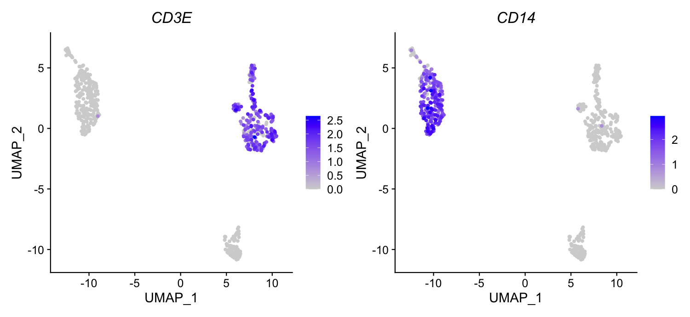

Bootcamp / Session 5 / 5.3
Session 5.3 · Homework
Read the Cell Ranger report, then find T cells and monocytes on a UMAP
A single-cell run that already finished on Foundry. First you and an AI agent read its Cell Ranger report and ask whether the run looks healthy. Then you load the Seurat object it produced and color two classic PBMC markers on the UMAP.
The data
Foundry run 12084 ran the Cell Ranger Multi pipeline on 10x Genomics’ public 1k PBMCs with cell surface protein dataset (pbmc_1k_protein_v3): blood cells from one healthy donor, with gene expression and 17 TotalSeq-B antibodies read from the same cells. 10x’s own web summary for these reads, from an older Cell Ranger, is a useful comparison in Part 1. After Cell Ranger, the pipeline’s single-cell module filtered the cells, clustered them, and saved everything as one Seurat object. You use two of its outputs:
- Cell Ranger web summary (
cellranger_report/, 6 MB HTML): how the sequencing and cell calling went. - Seurat object (
scViewer/Final_Analysis.rds, 19 MB): counts, clusters, and the UMAP, ready to plot.
You do not need the original data for this session. If you want it, 10x serves the files directly: the raw FASTQs (4.7 GB, what Foundry ran on), the filtered count matrix (5 MB), and the antibody list. The dataset page describes the experiment but asks for your name and email first.
Set up
Make the folder and download the two files
The course site holds copies of both files from run 12084, so this works whether or not you can see the run in Foundry.
macOS:
mkdir -p ~/Documents/bootcamp/session5/pbmc cd ~/Documents/bootcamp/session5/pbmc curl -fsSL -o pbmc_web_summary.html https://biocore.umassmed.edu/data/session5/pbmc_web_summary.html curl -fsSL -o pbmc_final_analysis.rds https://biocore.umassmed.edu/data/session5/pbmc_final_analysis.rds
Windows PowerShell:
$d = Join-Path ([Environment]::GetFolderPath('MyDocuments')) 'bootcamp\session5\pbmc'
New-Item -ItemType Directory -Force $d | Out-Null
cd $d
curl.exe -fsSL -o pbmc_web_summary.html https://biocore.umassmed.edu/data/session5/pbmc_web_summary.html
curl.exe -fsSL -o pbmc_final_analysis.rds https://biocore.umassmed.edu/data/session5/pbmc_final_analysis.rds
Then in VS Code choose File, Open Folder, and open pbmc, as you did for RNA-Seq in 4.2. Keep the agent in ask-first mode.
Optional: find the same files in Foundry
If Foundry Connect is connected in your agent (4.2) and run 12084 is shared with you, ask the agent to show where the files came from.
Using Foundry Connect, show me run 12084: its pipeline, its status, and the list of its result files with sizes. Do not download anything. Which file is the Cell Ranger web summary, and which is the Seurat object?
Make sure R and Seurat are installed
Check whether R is installed on this computer and which version. If it is, check whether the Seurat package is installed. If something is missing, tell me exactly what to install and how for my operating system, and run an install only after I say yes.
Checkpoint R 4.3 or newer, and library(Seurat) loads with no error. Installing Seurat from CRAN takes a few minutes the first time.
Part 1: Read the Cell Ranger report
Before any biology, check that the run itself worked. Double-click pbmc_web_summary.html to open it in your browser and look at the Gene Expression and Antibody Capture tabs for a minute. Then let the agent read it with you.
1. Pull out the numbers
pbmc_web_summary.html in this folder is a Cell Ranger multi web summary, about 6 MB. Do not read the whole file. Its metrics sit in a JSON object assigned to "const data =" inside a script tag. Write a small script that extracts that object and prints a table of every metric's name and value, for the library and for the sample. Then tell me in plain words what was sequenced, against which reference, how many cells were found, and how deeply they were sequenced.
Checkpoint 715 cells, Single Cell 3′ v3 chemistry, reference GRCh38-2024-A, a median of 2,812 genes and 7,867 UMIs per cell, and sequencing saturation of about 59%.
2. Ask it questions
Pick at least three. Make the agent point to the metric each answer rests on.
This is the "1k PBMC" dataset, but Cell Ranger called 715 cells. Is that a problem? What decides how many cells a run recovers?
Sequencing saturation is about 59% for gene expression. What does that number mean, and would sequencing this library deeper find many new molecules?
About 32% of reads map to introns. Why does Cell Ranger count those here, and what does "Include Introns = true" change?
For the antibody library, only about 55% of reads are usable. Where do the other reads go, and should I worry?
Overall, would you trust this run enough to analyze it? List anything in the report that you would check before publishing.
- Find two of its numbers in the HTML report yourself. Do they match?
- Did it ever state a metric that is not in the table it printed? That is a guess, not a reading.
Part 2: Two markers on the UMAP
CD3E is part of the T cell receptor complex, so it marks T cells. CD14 marks classical monocytes. In blood they should land in different places on the UMAP.
3. Look inside the Seurat object
pbmc_final_analysis.rds in this folder is a Seurat object from a 10x PBMC run. Write an R script that loads it with Seurat and tells me: how many cells and genes, which assays, which dimensional reductions, the metadata column names, and how many cells are in each of seurat_clusters. Never print the count matrix itself.
Checkpoint 562 cells, 38,606 genes, assays RNA and AntibodyCapture, reductions pca, umap, and tsne, and 9 clusters numbered 0 to 8.
4. Where did 153 cells go?
Cell Ranger reported 715 cells, but this object has 562. Look at the metadata columns, especially Filtering, Doublet.Classification, nFeature_RNA and percent.mt, and explain what most likely happened to the missing cells. Say which parts you can prove from this object and which you are inferring.
5. Color CD3E and CD14 on the UMAP
Make a side-by-side UMAP colored by expression of CD3E and CD14, with expressing cells drawn on top, and save it as umap_CD3E_CD14.png. Then tell me how many cells have CD3E above zero, how many have CD14 above zero, how many have both, and which clusters have the highest mean of each gene.
Checkpoint 202 cells express CD3E and 202 express CD14 (the same number is a coincidence), and only 2 express both. CD3E is highest in clusters 0, 4, 6 and 7, CD14 in clusters 1, 3 and 5.
Compare What your plot should look like

6. Stretch: name the third island, and check the protein
One island on the UMAP expresses neither CD3E nor CD14. Pick two marker genes you would expect for the other major PBMC types, plot them, and tell me what that island most likely is. Then plot the CD3 and CD14 antibodies from the AntibodyCapture assay next to the RNA. Where do RNA and protein agree, and where do they not?
- Did the Cell Ranger report give you any reason not to trust this object?
- Do the T cell and monocyte islands match what you expected? Which clusters would you merge if you only cared about major cell types?
- Where did you have to correct the agent, or check its numbers yourself?
Links
After the session
Two minutes of feedback, so the next session is pitched better. It also records your attendance, so fill it in whether you were in the room, on Zoom, or catching up on the recording.